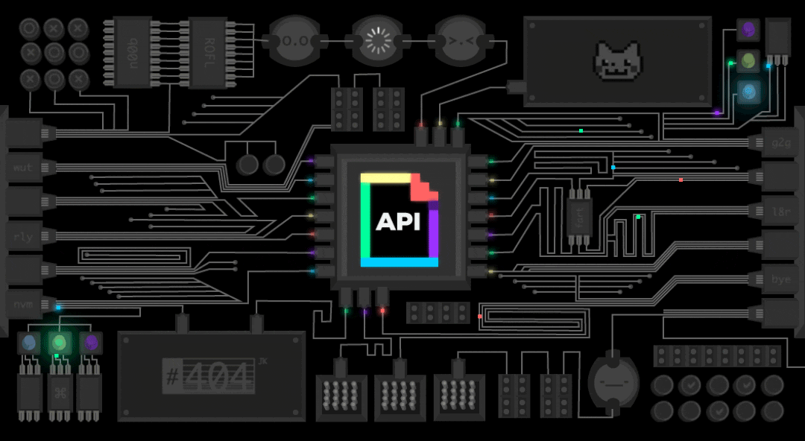
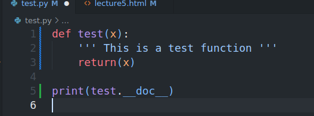
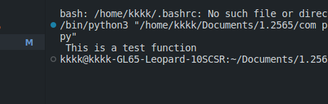
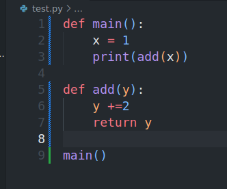

Lecture 5
Function and Recursion

FUNCTION
A function is a block of code which only runs when it is called. You can pass data, known as parameters, into a function. A function can return data as a result.Function improves efficiency and reduces errors because of the reusability of a code. Once we create a function, we can call it anywhere and anytime. The benefit of using a function is reusability and modularity.

Function name should be in lowercase and if it is more than one word then use underscore to separate them.should be not start with number or special character.can't contain space.
Parameter is the value passed to the function. We can pass any number of parameters. Function body uses the parameter’s value to perform an action
Function body is the block of code that performs the action. It is indented from the function header. The function body can contain any number of statements.
NOTE:While defining a function, we use two keywords,def(mandatory) andreturn(optional). The def keyword is used to define a function. The return keyword is used to return a value from a function.
Example


BENEFITS OF MODULARISING A PROGRAM WITH FUNCTIONS
- Reduces the need for duplicate code. This makes programs shorter, easier to read, and easier to update.
- Divides a large program into smaller sub-programs, making it easier to debug and test.
- Allows programmers to solve larger problems by combining their knowledge of several smaller problems.

ARGUMENTS TO A FUNCTION
LOCAL VARIABLES?
Variables that are created inside a function belong to the local scope of that function, and can only be used inside that function.Different functions can have local variables with the same name, because local variables are only visible inside their own function.


-
PASSING ARGUMENTS
An argument is any piece of data that is passed into a function when the function is called. A parameter is a variable that receives an argument that is passed into a function.


Example 2


DOCSTRINGS 
In Python, the documentation string is also called a docstring. It is a descriptive text (like a comment) written by a programmer to let others know what block of code does.
We write docstring in source code and define it immediately after module, class, function, or method definition.
It is being declared using triple single quotes (''' ''') or triple-double quotes (""" """).
We can access docstring using doc attribute (__doc__) for any object like list, tuple, dict, and user-defined function, etc.


-
GLOBAL,GLOBAL CONSTANTS
Global variables are variables that are defined outside of a function. They can be accessed inside or outside of functions.
-


PROGRAM SIMULATES 10 TOSSES OF A COIN


VALUE-RETURNING FUNCTIONS
-

-
Value-returning functions are functions that return a value to the calling statement. Thereturnstatement is used to return a value from a function.
Example1


Example2


-
STORING FUNCTIONS IN MODULES
Modules are files that contain functions. They are used to organize functions into logical groups. A module can be imported into a program using the import statement.
Example
create file for module

create file for module

module


-
RECURSION
A recursive function is a function that calls itself, again and again. Consider, calculating the factorial of a number is a repetitive activity, in that case, we can call a function again and again, which calculates factorial.-


COMMON FUNCTIONS
-
min()
min function returns the smallest value in a list.

-
sorted
sorted function returns a sorted list.


-
sum()
sum function returns the sum of the values in a list.


FINISH!
Thanks ! Goodluck
If you have any questions, please feel free to contact me.